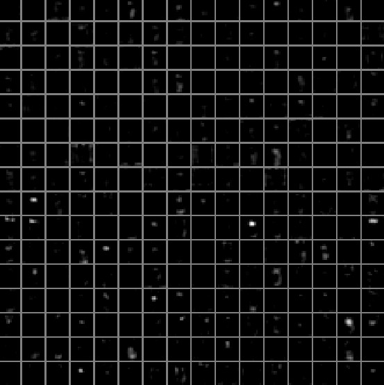
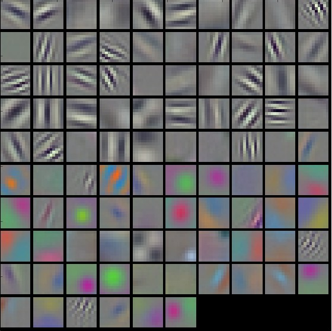
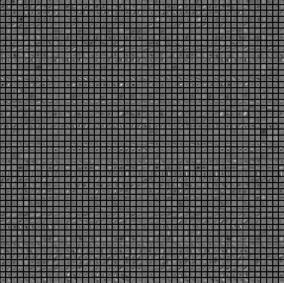
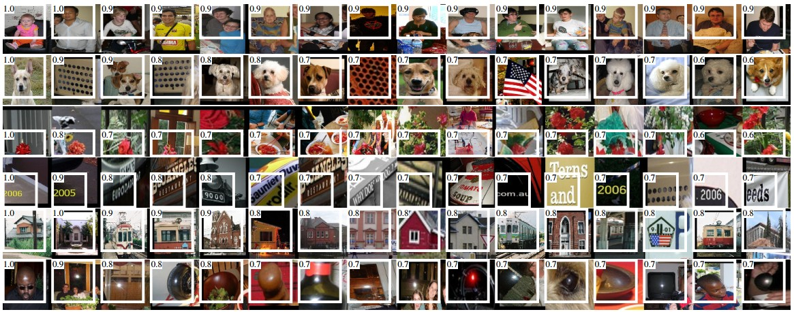
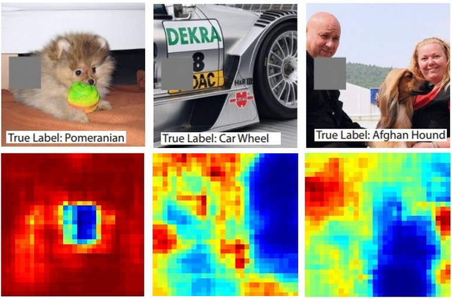

(this page is currently in draft form)
Visualizing what ConvNets
learn
Several approaches for understanding and visualizing Convolutional
Networks have been developed in the literature, partly as a response the
common criticism that the learned features in a Neural Network are not
interpretable. In this section we briefly survey some of these
approaches and related work.
Visualizing
the activations and first-layer weights
Layer Activations. The most straight-forward
visualization technique is to show the activations of the network during
the forward pass. For ReLU networks, the activations usually start out
looking relatively blobby and dense, but as the training progresses the
activations usually become more sparse and localized. One dangerous
pitfall that can be easily noticed with this visualization is that some
activation maps may be all zero for many different inputs, which can
indicate dead filters, and can be a symptom of high learning
rates.


Typical-looking activations on the first CONV layer (left), and the 5th CONV layer (right) of a trained AlexNet looking at a picture of a cat. Every box shows an activation map corresponding to some filter. Notice that the activations are sparse (most values are zero, in this visualization shown in black) and mostly local.
Conv/FC Filters. The second common strategy is to
visualize the weights. These are usually most interpretable on the first
CONV layer which is looking directly at the raw pixel data, but it is
possible to also show the filter weights deeper in the network. The
weights are useful to visualize because well-trained networks usually
display nice and smooth filters without any noisy patterns. Noisy
patterns can be an indicator of a network that hasn’t been trained for
long enough, or possibly a very low regularization strength that may
have led to overfitting.


Typical-looking filters on the first CONV layer (left), and the 2nd CONV layer (right) of a trained AlexNet. Notice that the first-layer weights are very nice and smooth, indicating nicely converged network. The color/grayscale features are clustered because the AlexNet contains two separate streams of processing, and an apparent consequence of this architecture is that one stream develops high-frequency grayscale features and the other low-frequency color features. The 2nd CONV layer weights are not as interpretable, but it is apparent that they are still smooth, well-formed, and absent of noisy patterns.
Retrieving
images that maximally activate a neuron
Another visualization technique is to take a large dataset of images,
feed them through the network and keep track of which images maximally
activate some neuron. We can then visualize the images to get an
understanding of what the neuron is looking for in its receptive field.
One such visualization (among others) is shown in Rich feature hierarchies for
accurate object detection and semantic segmentation by Ross Girshick
et al.:

Maximally activating images for some POOL5 (5th pool layer) neurons of an AlexNet. The activation values and the receptive field of the particular neuron are shown in white. (In particular, note that the POOL5 neurons are a function of a relatively large portion of the input image!) It can be seen that some neurons are responsive to upper bodies, text, or specular highlights.
One problem with this approach is that ReLU neurons do not
necessarily have any semantic meaning by themselves. Rather, it is more
appropriate to think of multiple ReLU neurons as the basis vectors of
some space that represents in image patches. In other words, the
visualization is showing the patches at the edge of the cloud of
representations, along the (arbitrary) axes that correspond to the
filter weights. This can also be seen by the fact that neurons in a
ConvNet operate linearly over the input space, so any arbitrary rotation
of that space is a no-op. This point was further argued in Intriguing properties of neural
networks by Szegedy et al., where they perform a similar
visualization along arbitrary directions in the representation
space.
Embedding the codes with
t-SNE
ConvNets can be interpreted as gradually transforming the images into
a representation in which the classes are separable by a linear
classifier. We can get a rough idea about the topology of this space by
embedding images into two dimensions so that their low-dimensional
representation has approximately equal distances than their
high-dimensional representation. There are many embedding methods that
have been developed with the intuition of embedding high-dimensional
vectors in a low-dimensional space while preserving the pairwise
distances of the points. Among these, t-SNE is one of the
best-known methods that consistently produces visually-pleasing
results.
To produce an embedding, we can take a set of images and use the
ConvNet to extract the CNN codes (e.g. in AlexNet the 4096-dimensional
vector right before the classifier, and crucially, including the ReLU
non-linearity). We can then plug these into t-SNE and get 2-dimensional
vector for each image. The corresponding images can them be visualized
in a grid:

t-SNE embedding of a set of images based on their CNN codes. Images that are nearby each other are also close in the CNN representation space, which implies that the CNN "sees" them as being very similar. Notice that the similarities are more often class-based and semantic rather than pixel and color-based. For more details on how this visualization was produced the associated code, and more related visualizations at different scales refer to <a href="http://cs.stanford.edu/people/karpathy/cnnembed/">t-SNE visualization of CNN codes</a>.
Occluding parts of the image
Suppose that a ConvNet classifies an image as a dog. How can we be
certain that it’s actually picking up on the dog in the image as opposed
to some contextual cues from the background or some other miscellaneous
object? One way of investigating which part of the image some
classification prediction is coming from is by plotting the probability
of the class of interest (e.g. dog class) as a function of the position
of an occluder object. That is, we iterate over regions of the image,
set a patch of the image to be all zero, and look at the probability of
the class. We can visualize the probability as a 2-dimensional heat map.
This approach has been used in Matthew Zeiler’s Visualizing and Understanding
Convolutional Networks:

Three input images (top). Notice that the occluder region is shown in grey. As we slide the occluder over the image we record the probability of the correct class and then visualize it as a heatmap (shown below each image). For instance, in the left-most image we see that the probability of Pomeranian plummets when the occluder covers the face of the dog, giving us some level of confidence that the dog's face is primarily responsible for the high classification score. Conversely, zeroing out other parts of the image is seen to have relatively negligible impact.
Visualizing the data
gradient and friends
Data Gradient.
Deep Inside Convolutional
Networks: Visualising Image Classification Models and Saliency
Maps
DeconvNet.
Visualizing and
Understanding Convolutional Networks
Guided Backpropagation.
Striving for Simplicity: The
All Convolutional Net
Reconstructing
original images based on CNN Codes
Understanding Deep Image
Representations by Inverting Them
Do
ConvNets Learn Correspondence? (tldr: yes)
ImageNet Large Scale Visual
Recognition Challenge
Fooling ConvNets
Explaining and Harnessing
Adversarial Examples
Comparing ConvNets to
Human labelers
What
I learned from competing against a ConvNet on ImageNet